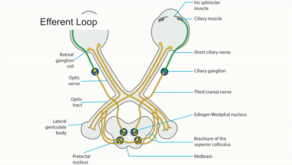

Sympathetic Pathway


-
First-order neuron
- Starts in hypothalamus, sends axons through brainstem and upper spinal cord, synapsing in intermediolateral cell column in first thoracic cord segment
-
Second-order neuron
- Starts in spinal cord, sends signal through paraspinal region and lung apex, synapsing on superior cervical ganglion at bifurcation of common carotid artery
-
Third-order neuron
Third Order Activated
- Starts in superior cervical ganglion, sends axons along wall of internal carotid artery, passing along middle ear promontory, carotid canal, cavernous sinus,where it resides next to the internal carotid artery in the middle of the venous sinus
- Axons enter orbit with nasociliary nerve and long ciliary nerves to iris dilator muscle and upper lid elevator Muller muscle





-
Lesion of first-order neuron
First order lesion
- Produces ipsilateral ptosis, miosis, and hemibody hypohydrosis (Horner syndrome)
- Commonest cause is dorsolateral medullary infarction (Wallenberg syndrome) but hypothalamic lesion may be implicated
-
Lesion of second-order neuron
Second order lesion
- Produces ipsilateral ptosis, miosis, and facial hypohydrosis (Horner syndrome)
- Commonest causes are spinal cord MRI Cord Horner and thoracic lesions
-
Tip: Horner syndrome may be an isolated clinical abnormality in second-order neuron lesions
-
Lesion of third-order neuron
Lesion of third-order neuron
- Produces ipsilateral ptosis and miosis, but no hypohydrosis (incomplete Horner syndrome), as sweat fibers split off at carotid bifurcation to travel with external carotid artery
- Commonest causes are carotid dissection, Carotid Dissection neck tumors, and neck trauma
-
Tip: Horner syndrome may be an isolated clinical abnormality in third-order neuron lesions, but acute carotid dissection usually accompanied by ipsilateral neck or face pain
-
Tip: Horner syndrome may arise from a lesion in cavernous Cavernous Sympathetic Lesion ,but always in combination with other clinical signs related to ocular motor and trigeminal dysfunction
-
Trap: Horner syndrome does not arise from an orbital lesion!